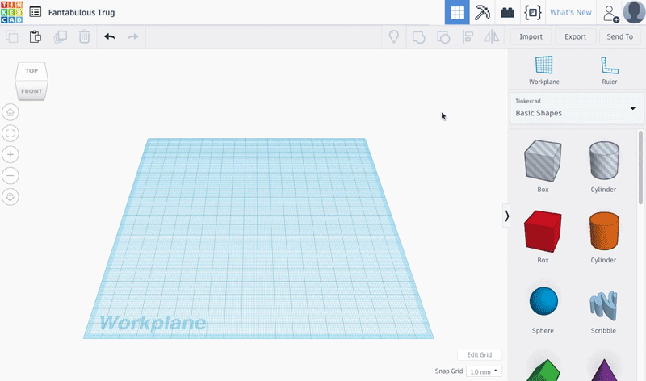
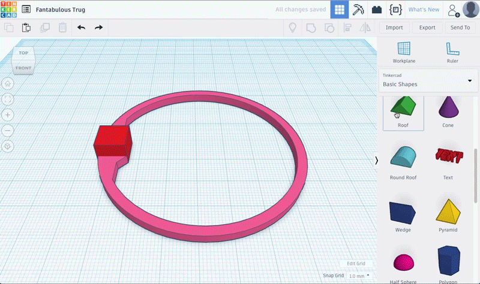
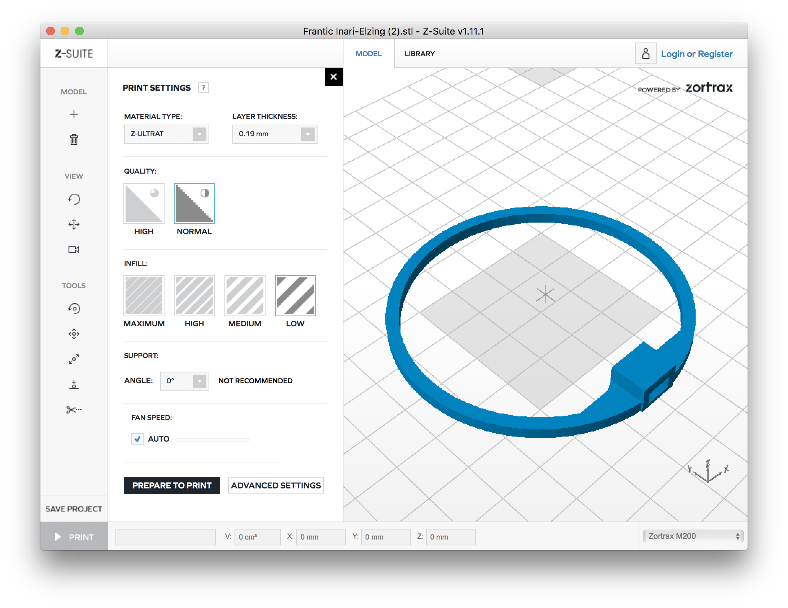

2. TinkerCAD
Import your file into Tinkercad using the button at the top right.
In import options, click on "Artboard" then enter 100 mm in Length and 100 mm in Width. 
Change the height of the imported part to 2 mm.
Add a cube 8 mm high, 10 mm depth by 10 mm wide.
Align the 2 pieces on the flat part of the circle with the "Align" tool as seen in the previous tutorial.
Take the roof shape by scroling down in the right panel rotate it by -90° horizontally and -90° vertically.
Then give him the dimensions : 24 mm Width, 6.50 mm Length and 3.25 mm Heights.
He will now look like a triangle.
(Tip : You can click on the white box with the dimensions inside it to change the numbers with your keyboard) 
Change the accuracy of the grid to 0.5 mm
Select the circle and the red box and group them together.
Give it an incline of 8º to the outside and raise the triangle by 1.50 mm.
(To be able to modify the inclination degree by degree, after clicking on the double arrow, you must keep the left click of the mouse pressed above the blue wheel above.)
Align the circle and the triangle to the left and to the center.
Then, move the triangle to the left of 1.1 mm (Tip : Keep the shift key down during the translation)

Select all the parts and group them together. Before exporting and printing it, you have to customize your propellers. You can see an exemple in the assembly part below. Be creative ! Export the shape by selecting "Export" then STL to be able to 3D print it !
Now you are ready to 3D Print your part 4 times!
Tip : Choose different filament color to differenciate the rear and the front of your drone.
 Optimal Settings for reference :
- "Z-ULTRA" material - Layer thickness : "0.19 mm"
- Quality : "NORMAL"
- Infill : "LOW"
- Support : ANGLE "0°" (no support)